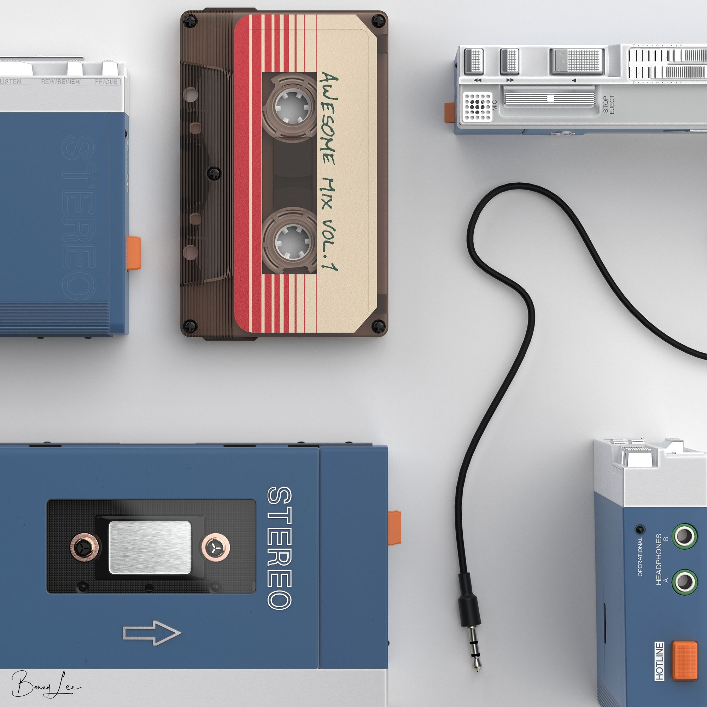

Superior Sound Quality
 The original mechanical performance, suitable for high-quality music reproduction. Responsive curve for the frequency 'Low' position' especially in bass response. The tone switch is aimed for the low and high bias tapes. The 'high' mode pushes the highs up to 6 dB at about 5-7kHz. The performance at high frequencies of consecuently provides low noise. The low level noise at 15kHz.
This model came from an era where quality was measured with other rules, different from nowadays ones.
Read more